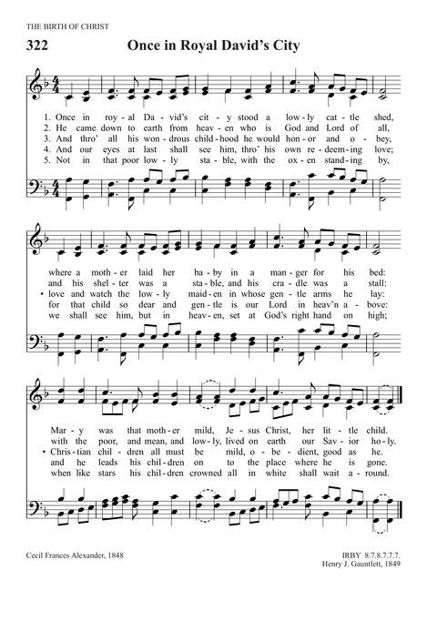

|
|
【感謝你賜寶貴聖經】 |
|
1
|
感謝你賜寶貴聖經，感謝事奉你的人，
|
|
IRBY https://hymnary.org/hymn/TPH2018/page/580
 |
|
|
|
|

https://youtu.be/feZbMg0yliA -
For Your Holy Book We Thank You https://www.youtube.com/watch?v=y9p_4Q-spu8
| Text: | For Your Holy Book We Thank You |
| Author: | Ruth Carter |
| Tune: | IRBY |
| Composer: | Henry J. Gauntlett |
| Short Name: | Ruth Carter |
| Full Name: | Carter, Ruth, 1900-1982 |
| Birth Year: | 1900 |
| Death Year: | 1982 |
| Short Name: | Henry J. Gauntlett |
| Full Name: | Gauntlett, Henry J. (Henry John), 1805-1876 |
| Birth Year: | 1805 |
| Death Year: | 1876 |
Henry J. Gauntlett (b. Wellington, Shropshire, July 9, 1805; d. London, England, February 21, 1876)

When he was nine years old, Henry John Gauntlett (b. Wellington, Shropshire, England, 1805; d. Kensington, London, England, 1876) became organist at his father's church in Olney, Buckinghamshire. At his father's insistence he studied law, practicing it until 1844, after which he chose to devote the rest of his life to music. He was an organist in various churches in the London area and became an important figure in the history of British pipe organs. A designer of organs for William Hill's company, Gauntlett extended the organ pedal range and in 1851 took out a patent on electric action for organs. Felix Mendelssohn chose him to play the organ part at the first performance of Elijah in Birmingham, England, in 1846. Gauntlett is said to have composed some ten thousand hymn tunes, most of which have been forgotten. Also a supporter of the use of plainchant in the church, Gauntlett published the Gregorian Hymnal of Matins and Evensong (1844).
Bert Polman
Tune Information
| Title: | IRBY |
| Composer: | Henry J. Gauntlett (1849) |
| Meter: | 8.7.8.7.7.7 |
| Incipit: | 57111 71221 13533 |
| Key: | F Major |
| Copyright: | Public Domain |
For your holy book we thank you
For your holy book we thank you. Ruth Carter* (1900-1982). This is believed to be the only hymn that Ruth Carter wrote (Milgate, 1982, p. 140). Certainly it is the only one that is known to hymnbooks. It has the immense benefit of a simple but instantly memorable first line, and it is unusual, and perhaps unique, in giving thanks for translators. Written for a Sunday school class at Buckhurst Hill, ca. 1932, it was sent to the Sunday School Union and appeared in the Graded Schools Intermediate Quarterly in 1937. It has since appeared in several books: For your holy book we thank you, And for all who served you well,Writing, guarding and translating,
https://hymnology.hymnsam.co.uk/f/for-your-holy-book-we-thank-you
SDAH 277 For Your holy book we thank You,
This is the only hymn text written by Ruth Carter. In a Congregational Sunday school where she was a leader, a course of lessons was given on “How we got the Bible,” about 1932. At the end of the course she could find no hymn to sum up the points that arose, and so she wrote these words to fulfill that need. It was used occasionally for the next five years. Carter thought that it might be shared with other groups of children ages 8 to 11 and sent it to the Graded School Advisor at the National Sunday School Union; it appeared in the Graded Schools Intermediate Quarterly in 1937. From that magazine it was picked up by hymnals in many countries. The words “Thee” and “Thy” in the original version were changed to “You” and “Your” in the Australian Songs of Worship, 1968. Carter graciously agreed to take into her hymn stanza 4 as proposed by the committee working in the Australian Hymn Book, 1977, where the full hymn is printed with the old German tune, ALL SAINTS.
Ruth Carter was born August 22, 1900, at Upper, Clapton, London, and educated at a small private school at Buckhurst Hill, Essex, where her family moved when she was 9. After attendance at a Methodist boarding school in Kent, she became active member of the Buckhurst Hill United Reformed Church, and made her home there. For 20 years until retirement in 1975, she made a career of remedial teaching of boys and girls at her home.
The SDAH Committee, wishing a new tune for this fine text on the Bible, sent the poem to some 30 SDA composers. From those submitted, HOLY BOOK was chosen.
Blythe Owen was born December 26, 1898, at Bruce, Minnesota, into a musical family. Her mother was the “town musician,” singing and playing the organ. Young Blythe started music lessons on a pump organ. When she was 8, a piano was added to the family treasures – to her great delight. Living for a while in North Dakota, the family had no SDA church privileges and attended Baptist and Methodist Sunday schools. At the age of 18 she graduated from a music conservatory and spent some 30 years in Chicago, Illinois, as a performer, teacher, and composer. She taught at Cosmopolitan School of Music, Chicago Teachers College, Northwestern University, and Roosevelt University. For six summers she studied at Eastman School of Music, Rochester, New York, studying composition with Howard Hanson. In 1949 a session at Ecole des Americaina at Fontainebleau, France, brought her into contact with teachers Nadia Boulanger and Francis Poulenc. As a teacher at Walla Walla College in 1961, she was president of the Music Teachers’ Association, played cello in the Walla Walla Symphony, and by commission wrote a work performed by that orchestra. A world traveler, in 1968, Owen toured the Orient, giving recitals and master classes at Japan, Taipei, Hong Kong, Manila, Singapore, and India. The winter quarter of 1972 found her teaching at Avondale College, Australia. In 1981 she was guest professor at the University of Montemorelos, Mexico, appearing there twice in the concert series. Her final post before retirement was a professor of music, teaching composition at Andrews University, Berrien Springs, Michigan, where she received an honorary doctorate in 1979.
A prolific composer, her compositions have won numerous local, national, and international awards, and have had many performances at festivals, universities, churches, and over the radio. A great variety of compositions have come from her pen, including works for orchestra, chamber groups, individual instruments and piano, organ, chorus, band, and solo voice, a number of which were published by major music publisher. She has written several hymn tunes, and writes, “I am very pleased that one of my hymns has been accepted [for SDAH], for this is the way I reach the church people, and this is my offering to the Lord and the church.” Owens lives in retirement near Andrews University.